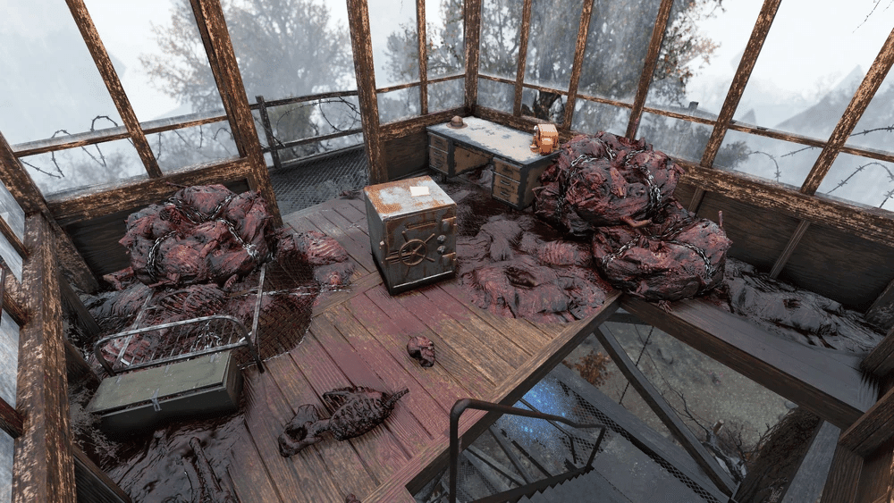
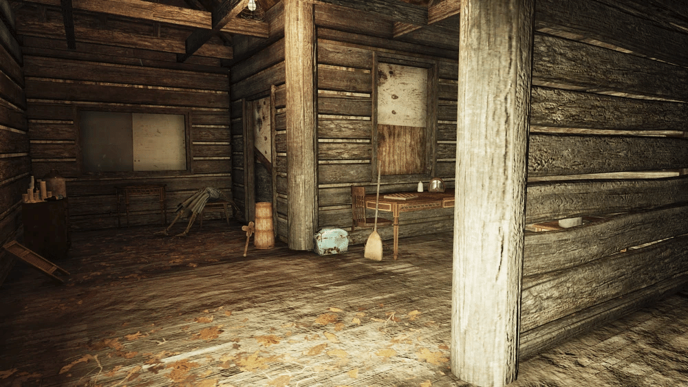
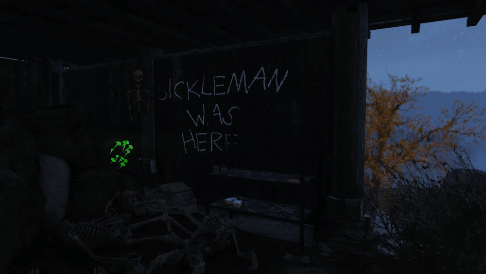

北カナー監視地点
「北カナー監視地点」は、『Fallout 76』に登場するロケーションです。
かつてレスポンダーが使用していましたが、現在はスーパーミュータントに占拠されています。
1. 背景
占拠の経緯:
この監視塔はかつてレスポンダーによって使用されていましたが、その住人はスーパーミュータントに制圧され、ミュータントが塔を彼らの目的のために使い始めました。鍵の破棄:
死亡する前に、塔にいたレスポンダーたちは、ミュータントが金庫の中身を入手するのを防ぐために、金庫の鍵を投げ捨てました。
2. レイアウト

この火の見櫓（ひのみやぐら）には、多数のスーパーミュータントが住み着いています。
塔の直下:
クッキングステーションと、スーパーミュータントが設置した肉袋に囲まれた爆発物クレートがあります。塔の頂上:
階段を上った最上階の部屋は肉袋が散乱した状態になっており、その中心に鍵が必要な金庫があります。金庫の鍵:
金庫の鍵は、西側にある簡易トイレの上にあります。
塔内の金庫を開けるのに必要です。周辺設備:
近くには武器作業台とウォーターポンプがあります。


廃墟のキャビン:
監視塔の近くには廃墟のキャビンがあり、その床下空間には「Sickleman（シックルマン）is here」という落書きがあります。
Wastelandersアップデート以前は、この落書きは「Sickleman was here」と書かれていました。その他の痕跡:
落書きの近くには、首を切断されたいくつかの骸骨があります。
床の穴からキャビンの内部に入ることができます。
3. 注目すべきルート
Responder's note（レスポンダーのメモ）- 塔内の金庫の上にあります。
おい、アホども、この金庫を開けたいか？問題ない！
お前たちが登ってくるときに、俺たちはバルコニーから鍵を投げ捨てた。外のクソ溜め（簡易トイレ）の真上に着地したのが見えたぞ！
お前ら歩くレンガどもには読めないだろうが、せいぜい頑張れ、このクソ野郎どもめ！
Safe key（金庫の鍵）- 西側の簡易トイレの上にあります。塔内の金庫を開けることができます。
4. 注記
エリアの測量（ロケーションアンロック）:
監視塔の頂上に登り手すりでインタラクトすると、プレイヤーキャラクターは周辺エリアを測量することができ、周辺のロケーションがアンロックされます。
5. 舞台裏
シックルマンの落書き:
キャビンにあるシックルマンの落書きは、リードアーティストのNathan Purkeypile（ネイサン・パーキーパイル）によって実装されました。
彼は小学校5年生の時に、シックルマンをキャラクターとする一連の怖い物語を書いており、その内容について先生が難色を示し、両親が学校に来て話し合う事態になったそうです。
しかし最終的に、パーキーパイル氏はモンスターや「その他の奇妙なもの」への愛情を、ビデオゲームアーティストという最終的なキャリアに注ぐことを決めたとのことです。
勘違いで無ければシックルマンの場所はヌカシャインでも飛んでくる場所ですね。
初心者さんは気づかないことが多いですが、監視塔で見渡すと周辺地域のみ発見ロケーションが見つけられて便利です。
他にも地図にピンが立ってる場所もインタラクトするとロケーションが表示される様になるので活用していきましょう!
This article uses material from the Fallout wiki at Fandom and is licensed under the Creative Commons Attribution-Share Alike License.
コミュニティ維持のため、寄付を受け付けております。
> COMMENTS